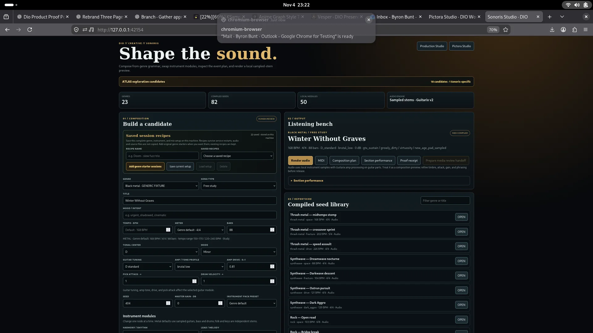
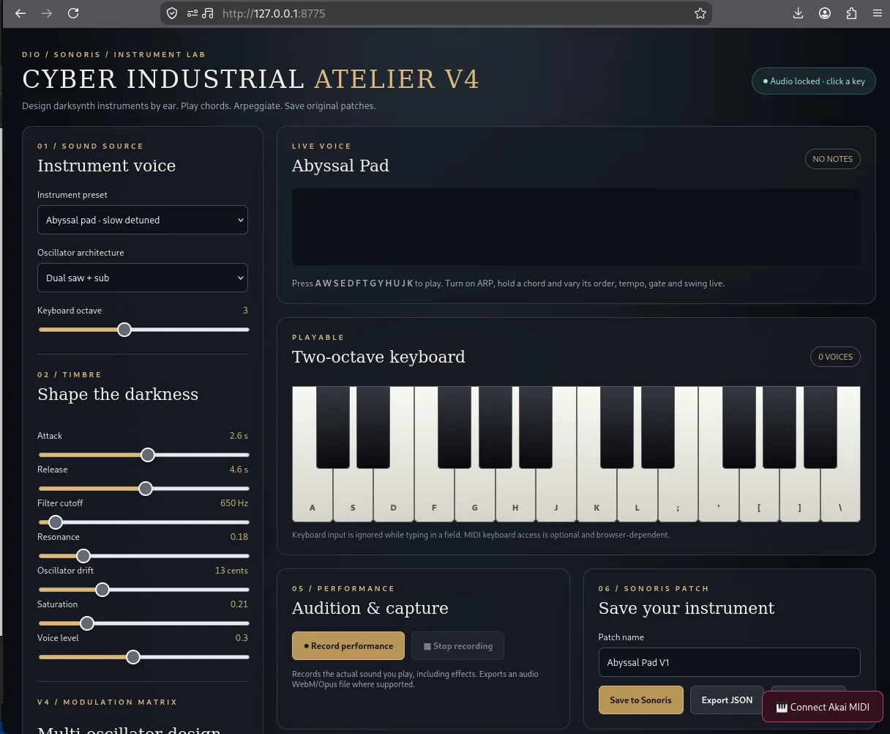

01 / 06 · Darksynth / industrial
0:15Rave Iron
A propulsive cyber-industrial sketch with layered synths and a driving beat.
Audition excerpt · unfinished compositionMP3
DIO Creative Organ / 01 — Sound
Heavy guitars. Neon synthesis. Orchestral drama. One intentional composition, with the structure and provenance to explain how it came together.
Working local composition tools · recordings available · human review required
DIO / SONORIS / PUBLISHED VIDEO
Watch Sonoris’s published video, then explore the original audio masters and the two live creation studios below.
Select Play to load YouTube, or use Watch on YouTube if embedding is blocked (Error 153). A hosted HTTPS page may work differently from a local preview.
Watch on YouTube ↗01 / THE LISTENING ROOM · ORIGINAL LOCAL RENDERS
A curated selection of actual Sonoris outputs, from heavy electronic sketches and extreme metal to jazz fusion and cinematic underscore. Hear the work, not just the promise.
A propulsive cyber-industrial sketch with layered synths and a driving beat.
Sustained extreme-metal textures and rapid rhythmic programming.
Fast rhythmic accents and chainsaw-toned guitar programming.
Rhodes, tenor, bass and drums interact across a longer instrumental arrangement.
Dark sustained harmonic motion and an understated rhythmic pulse, composed for presentation use.
Short, syncopated electronic grooves highlighting bass and drum patterning.
These are original files supplied from the local Sonoris workflow. Auditions and unfinished compositions are labelled as such. Inclusion does not imply independent musical acceptance, model licensing clearance or commercial-release approval. Inspect asset catalog and SHA-256 checksums ↗
02 / PRODUCTION SURFACES · OPERATOR CAPTURES
Sonoris is a creative system, not a passive playlist. These captures show the actual local tools. The public website documents them; it does not run the private local engines.

Actual local UI · port 42154Composition Studio
Genre-guided composition, rhythm and harmony controls, instrument modules and reviewable audio and MIDI. The captured interface reports 23 genres, 82 compiled seeds and 50 local modules.

Actual local UI · port 8775Cyber Industrial Atelier V4
Playable synthesis and hands-on patch design for the neon side of Sonoris. The local interface exposes instrument voices, oscillator architecture, timbre control and performance capture.
03 / Interactive sketch
Explore three possible arrangements using the same imaginary composition. The meters represent editorial intent, not generated audio.
Illustrative arrangement choices only. For real audio, use the listening room above.
Tight percussion and fast-picked guitars carry a nocturnal synthesizer hook. The arrangement still needs a real render and listening review.
02 / What the instrument makes possible
Sonoris now has working local composition and instrument-design surfaces, alongside original audio exports. Review of the actual music and publication rights remains a separate step.
Explore harmony, groove and instrumentation without erasing the musical identity of each source influence.
Develop original cues for campaign films and presentations, subject to audio, performer, source and rights review.
A future HOMS and Sophia pathway could explain arrangements, counterpoint, production and why a fusion works.
05 / Composition custody
Musical brief, genre references and ownership boundaries.
Separate musical layers and instrumentation choices.
Instrument and render provenance alongside versioned outputs.
Human subjective acceptance and commercial rights remain their own gates.
06 / Honest by design
The recordings above were generated or rendered locally; some are audition excerpts or unfinished arrangements. The on-page players are real, while the private engines are not exposed through this static website. Listening approval and applicable rights checks still govern public release.